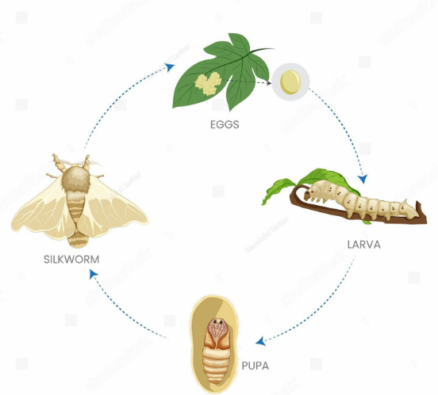

üï∞Ô∏è Un viaje de miles de a√±os
China, hace 5,000 años
El gusano de seda, conocido como Bombyx mori, fue domesticado en la antigua China y dio origen a la legendaria Ruta de la Seda.
üêõ ‚ÄúSe necesitan alrededor de 2,500 gusanos para producir una sola camiseta de seda.‚Äù
Xi Ling Shi y el capullo en el té
Cuenta la leyenda que una emperatriz descubrió la seda cuando un capullo cayó en su taza caliente. ¡Y así nació una industria!
Expansión global
El secreto de la seda se filtró desde China hacia India, Persia y luego Europa, influyendo en culturas como la española.
Actualidad
Hoy, los gusanos de seda se crían no solo para textiles, sino también con fines educativos, científicos y ecológicos.
‚ú® La historia del gusano de seda es tambi√©n la historia de la humanidad tejiendo conexiones. üßµ
↑